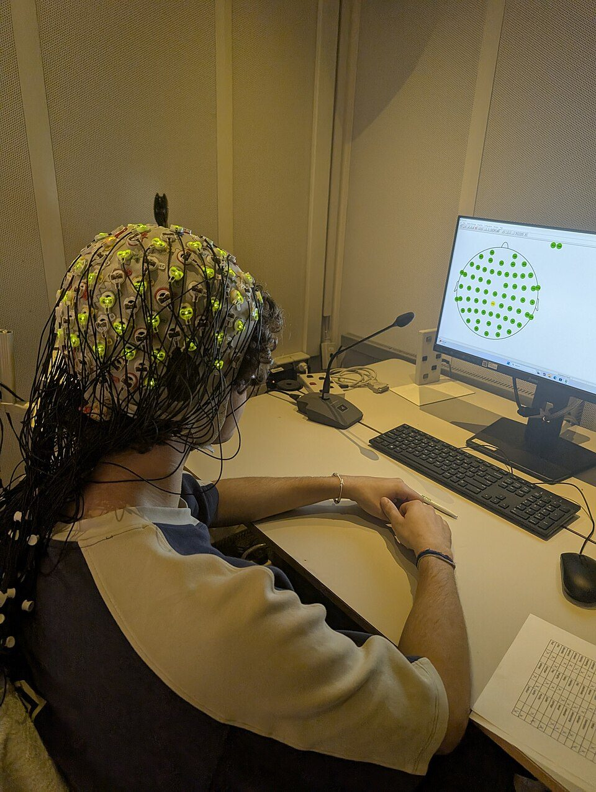
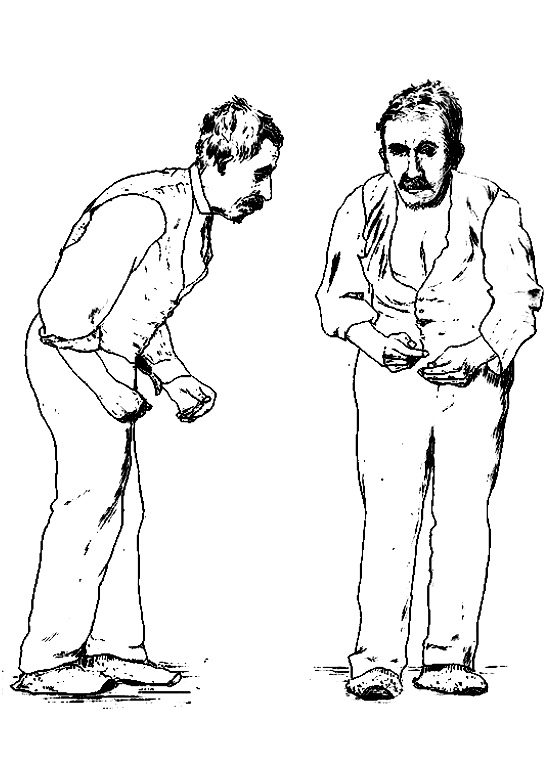

Frequently asked questions
Short, clear answers about stroke, headache, memory, epilepsy and more.

How do I recognise a stroke and what should I do?
A drooping mouth, an arm that will not lift, strange speech: call 112 (or your local emergency number) and note the time. What not to do while help is on the way.
Read →
When should I worry about a headache?
Most headaches are harmless, like migraine or tension-type headache. These are the warning signs that mean you need urgent medical attention.
Read →
Is my forgetfulness Alzheimer's?
Forgetting where you left your keys or a name is normal. What matters is whether the lapses affect daily life. The differences between normal ageing and cognitive decline.
Read →
Can epilepsy be cured?
Many people with epilepsy become seizure-free with treatment and some can stop it. Some childhood epilepsies go away on their own and others are cured with surgery.
Read →
What should I do if someone has a seizure?
Stay calm, protect their head, put nothing in their mouth, time it and turn the person on their side when the jerking stops. When to call 112 (or your local emergency number).
Read →
Is Parkinson's hereditary?
In the vast majority of cases, no. Only 10-15% of people with Parkinson's have a relevant genetic variant. What it means to have an affected relative.
Read →
Why do my hands or feet go numb?
Brief tingling from a posture is normal. When it is frequent or persistent, the most common causes are carpal tunnel syndrome, diabetic neuropathy or vitamin B12 deficiency.
Read →
What does a neurologist do, and when will I be referred?
A neurologist treats diseases of the brain, spinal cord, nerves and muscles. How to prepare for your first appointment to get the most out of it.
Read →
Do memory supplements work?
Ginkgo, omega-3, phosphatidylserine, vitamin complexes or nootropics: none has been shown to prevent dementia or improve memory in people without deficiencies. What does work.
Read →
Is it dizziness or vertigo?
"Dizziness" can mean feeling faint, unsteady or that the room is spinning. Telling them apart points to the cause: the inner ear, blood pressure, the heart or, rarely, the brain.
Read →Neurological warning signs: when to call 112
A short list of nervous system symptoms that are an emergency, what to do while help is on its way and what not to do.
Read →